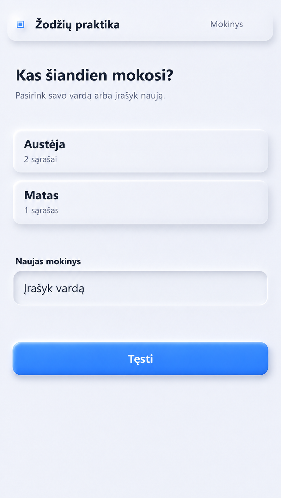
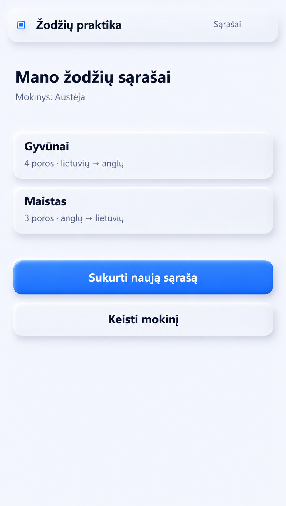
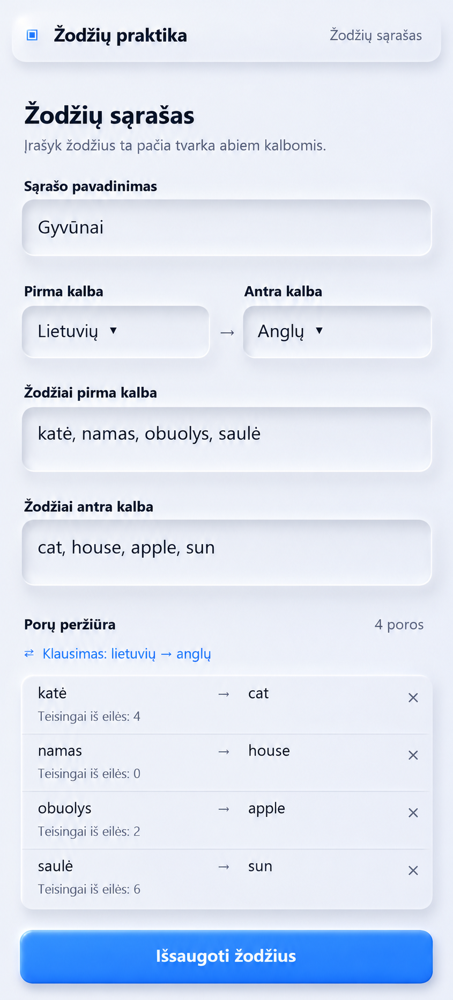
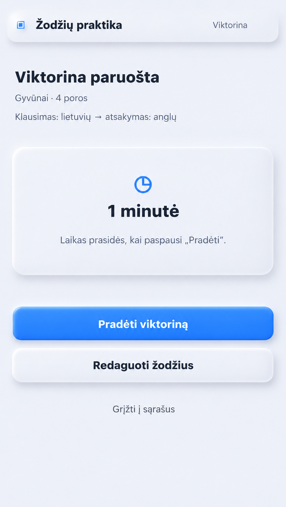
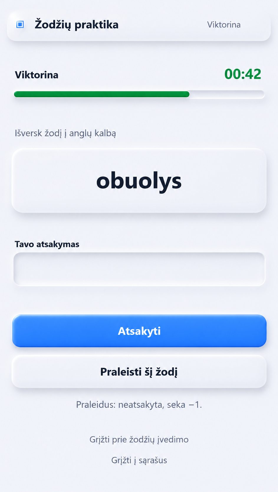
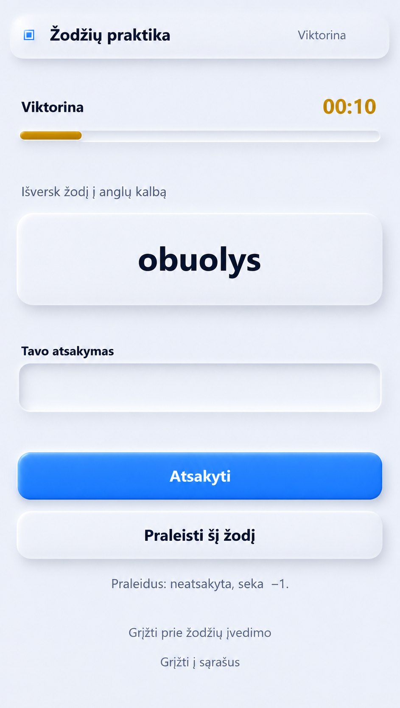
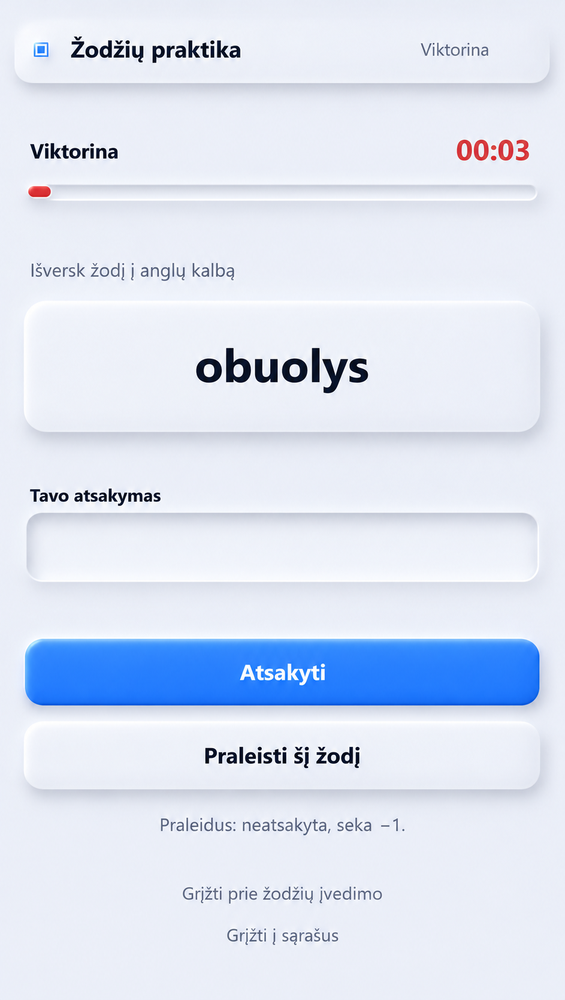
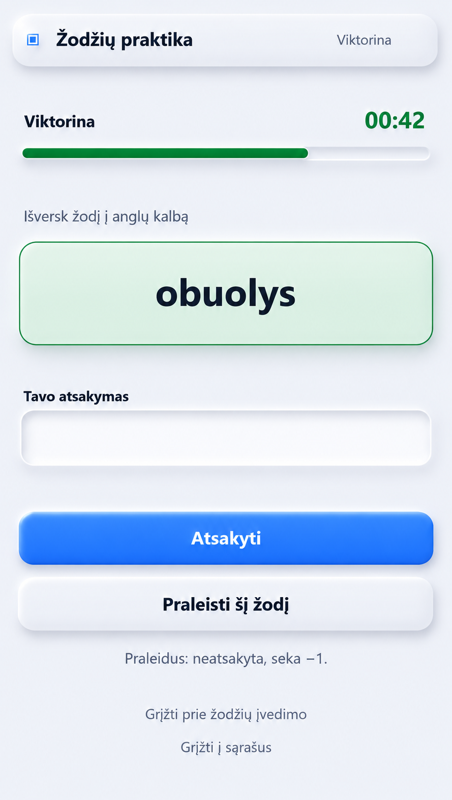
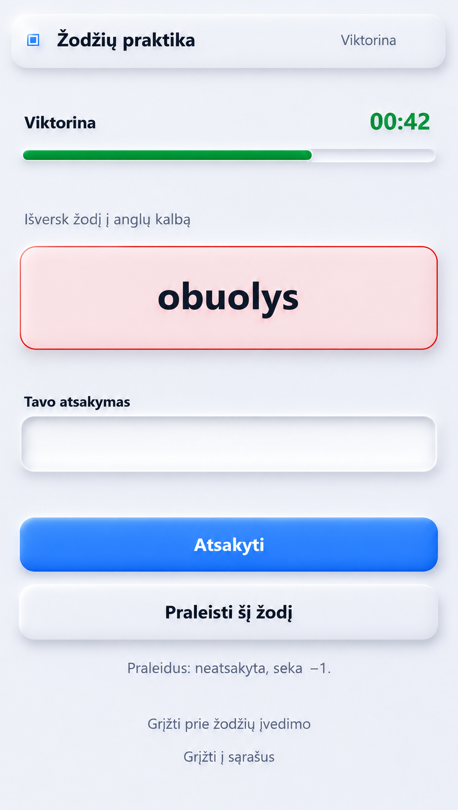
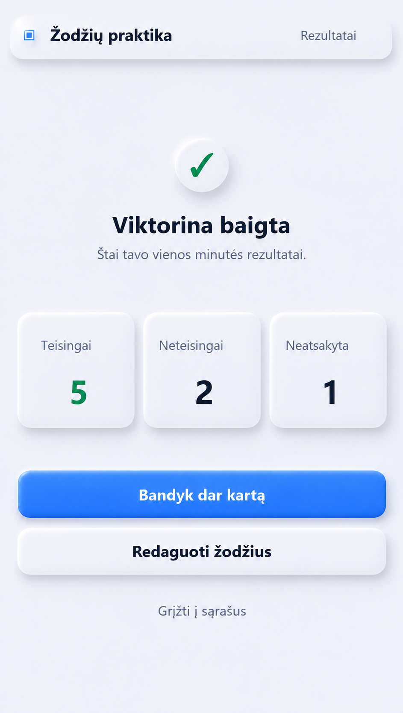

Žodžių praktika — Neumorphic UI
Šviesesnio fono ekranai. Paspauskite vaizdą, jei norite jį atidaryti visu dydžiu.




















Šviesesnio fono ekranai. Paspauskite vaizdą, jei norite jį atidaryti visu dydžiu.









